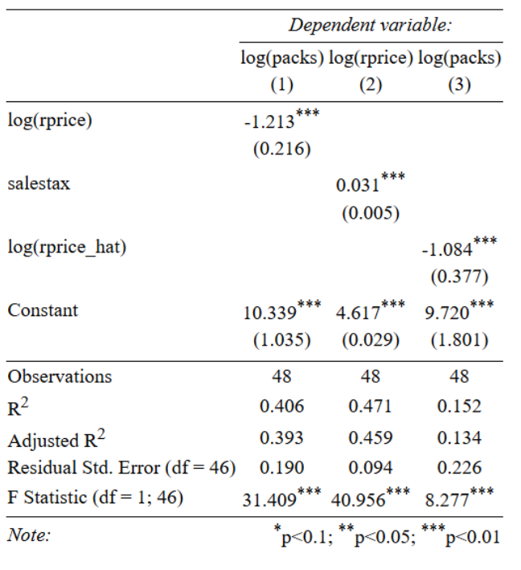

IV
Nova SBE
Review
Review
We will need this:
\[ F = \frac{(R^2_{ur} - R^2_{r})/q}{(1 - R^2_{ur})/(n-k-1)} \]
Exercises
https://moodle.novasbe.pt/mod/folder/view.php?id=4021

Exercise 6.1
By how much taxes must be increased ot reach a certain reduction in cigarette consumption? Using the price elasticity for the demand, we are interested in estimating \(\beta_1\) in:
[ (Q_i^{cigarettes})=_0+_1(P_i^{cigarettes})+u_i ]
where \(\ln \left(Q_i^{cigarettes}\right)\) is the number of cigarette packs per capita sold and \(\ln\left(P_i^{cigarettes}\right)\) is the after-tax average real price per pack of cigarettes in state \(i\). We use the data set \(CigarettesSW\) - data on cigarette consumption for the 48 continental US States in 1995.
Exercises 6.1
- Is it reasonable to use an OLS regression of log quantity on log price to estimate the price elasticity for the demand? Why?
Exercise 6.1
- Assume \(\ln \left(SalesTax_i\right)\) is used as an instrumental variable for the endogenous regressionr, \(\ln\left(P_i^{cigarettes}\right)\). \(\ln\left(SalesTax_i\right)\) is the portion of taxes on cigarettes arising from the general sales tax. Discuss the two conditions that need to be satisfied for \(\ln\left(SalesTax_i\right)\) to be a valid instrument.
Exercise 6.1
The output in the next slide presents estiamtes for three different specifications: 1. is a simple linear regression for the price elasticity; 2. is the first-stage of the 2SLS Estimator 3. the second stage of the 2SLS.
Exercise 6.1
Regression
Exercise 6.1
- How much of the observed variation in \(\ln\left(P_i^{cigarettes}\right)\) is explained by the instrument \(\ln\left(SalesTax_i\right)\) Relate the result with the concept of weak instrument.
Exercise 6.1
- Explain the difference between teh second-stage regression (3) and the SLR(1).
Exercise 6.1
- Interpret the coefficient for (3). Compare it with (1) and comment.
Exercise 6.1
- Intuitively, what do you point out as the main limitations of these models?
Appendix
t table
| df-\(\alpha/2\) | 0.50 | 0.25 | 0.20 | 0.15 | 0.10 | 0.05 | 0.025 | 0.01 | 0.005 | 0.001 | 0.0005 |
|---|---|---|---|---|---|---|---|---|---|---|---|
| 1 | 0.000 | 1.000 | 1.376 | 1.963 | 3.078 | 6.314 | 12.71 | 31.82 | 63.66 | 318.31 | 636.62 |
| 2 | 0.000 | 0.816 | 1.061 | 1.386 | 1.886 | 2.920 | 4.303 | 6.965 | 9.925 | 22.327 | 31.599 |
| 3 | 0.000 | 0.765 | 0.978 | 1.250 | 1.638 | 2.353 | 3.182 | 4.541 | 5.841 | 10.215 | 12.924 |
| 4 | 0.000 | 0.741 | 0.941 | 1.190 | 1.533 | 2.132 | 2.776 | 3.747 | 4.604 | 7.173 | 8.610 |
| 5 | 0.000 | 0.727 | 0.920 | 1.156 | 1.476 | 2.015 | 2.571 | 3.365 | 4.032 | 5.893 | 6.869 |
| 6 | 0.000 | 0.718 | 0.906 | 1.134 | 1.440 | 1.943 | 2.447 | 3.143 | 3.707 | 5.208 | 5.959 |
| 7 | 0.000 | 0.711 | 0.896 | 1.119 | 1.415 | 1.895 | 2.365 | 2.998 | 3.499 | 4.785 | 5.408 |
| 8 | 0.000 | 0.706 | 0.889 | 1.108 | 1.397 | 1.860 | 2.306 | 2.896 | 3.355 | 4.501 | 5.041 |
| 9 | 0.000 | 0.703 | 0.883 | 1.100 | 1.383 | 1.833 | 2.262 | 2.821 | 3.250 | 4.297 | 4.781 |
| 10 | 0.000 | 0.700 | 0.879 | 1.093 | 1.372 | 1.812 | 2.228 | 2.764 | 3.169 | 4.144 | 4.587 |
| 11 | 0.000 | 0.697 | 0.876 | 1.088 | 1.363 | 1.796 | 2.201 | 2.718 | 3.106 | 4.025 | 4.437 |
| 12 | 0.000 | 0.695 | 0.873 | 1.083 | 1.356 | 1.782 | 2.179 | 2.681 | 3.055 | 3.930 | 4.318 |
| 13 | 0.000 | 0.694 | 0.870 | 1.079 | 1.350 | 1.771 | 2.160 | 2.650 | 3.012 | 3.852 | 4.221 |
| 14 | 0.000 | 0.692 | 0.868 | 1.076 | 1.345 | 1.761 | 2.145 | 2.624 | 2.977 | 3.787 | 4.140 |
| 15 | 0.000 | 0.691 | 0.866 | 1.074 | 1.341 | 1.753 | 2.131 | 2.602 | 2.947 | 3.733 | 4.073 |
| 16 | 0.000 | 0.690 | 0.865 | 1.071 | 1.337 | 1.746 | 2.120 | 2.583 | 2.921 | 3.686 | 4.015 |
| 17 | 0.000 | 0.689 | 0.863 | 1.069 | 1.333 | 1.740 | 2.110 | 2.567 | 2.898 | 3.646 | 3.965 |
| 18 | 0.000 | 0.688 | 0.862 | 1.067 | 1.330 | 1.734 | 2.101 | 2.552 | 2.878 | 3.610 | 3.922 |
| 19 | 0.000 | 0.688 | 0.861 | 1.066 | 1.328 | 1.729 | 2.093 | 2.539 | 2.861 | 3.579 | 3.883 |
| 20 | 0.000 | 0.687 | 0.860 | 1.064 | 1.325 | 1.725 | 2.086 | 2.528 | 2.845 | 3.552 | 3.850 |
| 21 | 0.000 | 0.686 | 0.859 | 1.063 | 1.323 | 1.721 | 2.080 | 2.518 | 2.831 | 3.527 | 3.819 |
| 22 | 0.000 | 0.686 | 0.858 | 1.061 | 1.321 | 1.717 | 2.074 | 2.508 | 2.819 | 3.505 | 3.792 |
| 23 | 0.000 | 0.685 | 0.858 | 1.060 | 1.319 | 1.714 | 2.069 | 2.500 | 2.807 | 3.485 | 3.768 |
| 24 | 0.000 | 0.685 | 0.857 | 1.059 | 1.318 | 1.711 | 2.064 | 2.492 | 2.797 | 3.467 | 3.745 |
| 25 | 0.000 | 0.684 | 0.856 | 1.058 | 1.316 | 1.708 | 2.060 | 2.485 | 2.787 | 3.450 | 3.725 |
| 26 | 0.000 | 0.684 | 0.856 | 1.058 | 1.315 | 1.706 | 2.056 | 2.479 | 2.779 | 3.435 | 3.707 |
| 27 | 0.000 | 0.684 | 0.855 | 1.057 | 1.314 | 1.703 | 2.052 | 2.473 | 2.771 | 3.421 | 3.690 |
| 28 | 0.000 | 0.683 | 0.855 | 1.056 | 1.313 | 1.701 | 2.048 | 2.467 | 2.763 | 3.408 | 3.674 |
| 29 | 0.000 | 0.683 | 0.854 | 1.055 | 1.311 | 1.699 | 2.045 | 2.462 | 2.756 | 3.396 | 3.659 |
| 30 | 0.000 | 0.683 | 0.854 | 1.055 | 1.310 | 1.697 | 2.042 | 2.457 | 2.750 | 3.385 | 3.646 |
| 40 | 0.000 | 0.681 | 0.851 | 1.050 | 1.303 | 1.684 | 2.021 | 2.423 | 2.704 | 3.307 | 3.551 |
| 60 | 0.000 | 0.679 | 0.848 | 1.045 | 1.296 | 1.671 | 2.000 | 2.390 | 2.660 | 3.232 | 3.460 |
| 80 | 0.000 | 0.678 | 0.846 | 1.043 | 1.292 | 1.664 | 1.990 | 2.374 | 2.639 | 3.195 | 3.416 |
| 100 | 0.000 | 0.677 | 0.845 | 1.042 | 1.290 | 1.660 | 1.984 | 2.364 | 2.626 | 3.174 | 3.390 |
| 1000 | 0.000 | 0.675 | 0.842 | 1.037 | 1.282 | 1.646 | 1.962 | 2.330 | 2.581 | 3.098 | 3.300 |
| Z | 0.000 | 0.674 | 0.842 | 1.036 | 1.282 | 1.645 | 1.960 | 2.326 | 2.576 | 3.090 | 3.291 |
F table
| df2-α=0.05 | 1 | 2 | 3 | 4 | 5 | 6 | 7 | 8 | 9 | 10 |
|---|---|---|---|---|---|---|---|---|---|---|
| 1.000 | 161.448 | 199.500 | 215.707 | 224.583 | 230.162 | 233.986 | 236.768 | 238.883 | 240.543 | 241.882 |
| 2.000 | 18.513 | 19.000 | 19.164 | 19.247 | 19.296 | 19.330 | 19.353 | 19.371 | 19.385 | 19.396 |
| 3.000 | 10.128 | 9.552 | 9.277 | 9.117 | 9.013 | 8.941 | 8.887 | 8.845 | 8.812 | 8.786 |
| 4.000 | 7.709 | 6.944 | 6.591 | 6.388 | 6.256 | 6.163 | 6.094 | 6.041 | 5.999 | 5.964 |
| 5.000 | 6.608 | 5.786 | 5.409 | 5.192 | 5.050 | 4.950 | 4.876 | 4.818 | 4.772 | 4.735 |
| 6.000 | 5.987 | 5.143 | 4.757 | 4.534 | 4.387 | 4.284 | 4.207 | 4.147 | 4.099 | 4.060 |
| 7.000 | 5.591 | 4.737 | 4.347 | 4.120 | 3.972 | 3.866 | 3.787 | 3.726 | 3.677 | 3.637 |
| 8.000 | 5.318 | 4.459 | 4.066 | 3.838 | 3.687 | 3.581 | 3.500 | 3.438 | 3.388 | 3.347 |
| 9.000 | 5.117 | 4.256 | 3.863 | 3.633 | 3.482 | 3.374 | 3.293 | 3.230 | 3.179 | 3.137 |
| 10.000 | 4.965 | 4.103 | 3.708 | 3.478 | 3.326 | 3.217 | 3.135 | 3.072 | 3.020 | 2.978 |
| 11.000 | 4.844 | 3.982 | 3.587 | 3.357 | 3.204 | 3.095 | 3.012 | 2.948 | 2.896 | 2.854 |
| 12.000 | 4.747 | 3.885 | 3.490 | 3.259 | 3.106 | 2.996 | 2.913 | 2.849 | 2.796 | 2.753 |
| 13.000 | 4.667 | 3.806 | 3.411 | 3.179 | 3.025 | 2.915 | 2.832 | 2.767 | 2.714 | 2.671 |
| 14.000 | 4.600 | 3.739 | 3.344 | 3.112 | 2.958 | 2.848 | 2.764 | 2.699 | 2.646 | 2.602 |
| 15.000 | 4.543 | 3.682 | 3.287 | 3.056 | 2.901 | 2.790 | 2.707 | 2.641 | 2.588 | 2.544 |
| 16.000 | 4.494 | 3.634 | 3.239 | 3.007 | 2.852 | 2.741 | 2.657 | 2.591 | 2.538 | 2.494 |
| 17.000 | 4.451 | 3.592 | 3.197 | 2.965 | 2.810 | 2.699 | 2.614 | 2.548 | 2.494 | 2.450 |
| 18.000 | 4.414 | 3.555 | 3.160 | 2.928 | 2.773 | 2.661 | 2.577 | 2.510 | 2.456 | 2.412 |
| 19.000 | 4.381 | 3.522 | 3.127 | 2.895 | 2.740 | 2.628 | 2.544 | 2.477 | 2.423 | 2.378 |
| 20.000 | 4.351 | 3.493 | 3.098 | 2.866 | 2.711 | 2.599 | 2.514 | 2.447 | 2.393 | 2.348 |
| 21.000 | 4.325 | 3.467 | 3.072 | 2.840 | 2.685 | 2.573 | 2.488 | 2.420 | 2.366 | 2.321 |
| 22.000 | 4.301 | 3.443 | 3.049 | 2.817 | 2.661 | 2.549 | 2.464 | 2.397 | 2.342 | 2.297 |
| 23.000 | 4.279 | 3.422 | 3.028 | 2.796 | 2.640 | 2.528 | 2.442 | 2.375 | 2.320 | 2.275 |
| 24.000 | 4.260 | 3.403 | 3.009 | 2.776 | 2.621 | 2.508 | 2.423 | 2.355 | 2.300 | 2.255 |
| 25.000 | 4.242 | 3.385 | 2.991 | 2.759 | 2.603 | 2.490 | 2.405 | 2.337 | 2.282 | 2.236 |
| 26.000 | 4.225 | 3.369 | 2.975 | 2.743 | 2.587 | 2.474 | 2.388 | 2.321 | 2.265 | 2.220 |
| 27.000 | 4.210 | 3.354 | 2.960 | 2.728 | 2.572 | 2.459 | 2.373 | 2.305 | 2.250 | 2.204 |
| 28.000 | 4.196 | 3.340 | 2.947 | 2.714 | 2.558 | 2.445 | 2.359 | 2.291 | 2.236 | 2.190 |
| 29.000 | 4.183 | 3.328 | 2.934 | 2.701 | 2.545 | 2.432 | 2.346 | 2.278 | 2.223 | 2.177 |
| 30.000 | 4.171 | 3.316 | 2.922 | 2.690 | 2.534 | 2.421 | 2.334 | 2.266 | 2.211 | 2.165 |
| 40.000 | 4.085 | 3.232 | 2.839 | 2.606 | 2.449 | 2.336 | 2.249 | 2.180 | 2.124 | 2.077 |
| 60.000 | 4.001 | 3.150 | 2.758 | 2.525 | 2.368 | 2.254 | 2.167 | 2.097 | 2.040 | 1.993 |
| 120.000 | 3.920 | 3.072 | 2.680 | 2.447 | 2.290 | 2.175 | 2.087 | 2.016 | 1.959 | 1.910 |
| 1000000000.000 | 3.841 | 2.996 | 2.605 | 2.372 | 2.214 | 2.099 | 2.010 | 1.938 | 1.880 | 1.831 |

Econometrics